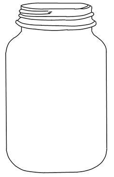

<!DOCTYPE html>
<html>
<head>
  <script src="../JarExperiment/jspsych.js"></script>
  <script src="../JarExperiment/plugins/jspsych-canvas-keyboard-response.js"></script>
      <script src="../JarExperiment/plugins/jspsych-image-keyboard-response.js"></script>

  <script src="../JarExperiment/js/fabric.js"> </script>
  <link rel="stylesheet" href="../JarExperiment/css/jspsych.css"></link>
  <style>
    img {
      width: 300px;
    }
  </style>
</head>
<body>   </body>
<script>
    var coinresultarray = [];
    var colorresultarray = [];
	var sequence_counter = 0;
    var sequence_counter_jar_1 = 0;
    var sequence_counter_jar_2 = 0;

    // Will be used to shuffle jar choice, ball sequence, block sequence

    ////////////

//Sequence array
var ball_drawing_trials_1 = [2, 5, 10]
var ball_drawing_sequence_1 = jsPsych.randomization.repeat(ball_drawing_trials_1, 6);
    
var ball_drawing_trials_2 = [2, 5, 10]
var ball_drawing_sequence_2 = jsPsych.randomization.repeat(ball_drawing_trials_2, 6);

// Jar selected Array
var jar_selection = ['jar_1_both','jar_2_both']
var jar_selection_sequence = jsPsych.randomization.repeat(jar_selection, 18);

//////////////////

    


    
var timeline = []
var trial_counter = 1
  var trial = {
    type: 'canvas-keyboard-response',
    stimulus: ['masonjar.jpg'],
    choices: jsPsych.NO_KEYS,
    trial_duration: 2000,
    prompt: '<p>No response allowed</p>',
  	on_finish: function(){
  		  coinresultarray += coinresult
          if (coinresult === 1){
              colorresultarray.push("red")}
              else {
                  colorresultarray.push("blue")
              }
	    trial_counter += 1
          }
    }
  
  
  var test_trial = {
      type: 'image-keyboard-response',
      stimulus: ['2R18BSlide.png'],
      stimulus_height: 400,
      stimulus_width: 650,
      choices: ['d', 'k'],
      prompt: '<p>Press the d key for left and k key for right</p>',
	  on_finish: function(data){
	  	coinresultarray = []
		colorresultarray = []
		trial_counter = 1
		sequence_counter += 1

    switch(jar_selection_sequence[sequence_counter]) {
    case 'jar_1_both':
    sequence_counter_jar_1 += 1
    break;
    
    case 'jar_2_both':
    sequence_counter_jar_2 += 1
    break;
}
      }
  }

//create actual jars
var jar_blueballs = [0]
var jar_redballs = [1] 


var jar_1_blue = jsPsych.randomization.repeat(jar_blueballs, 18)
var jar_1_red = jsPsych.randomization.repeat(jar_redballs, 2)
var jar_1_concat = jar_1_blue.concat(jar_1_red)
var jar_1_both = jsPsych.randomization.shuffle(jar_1_concat)

var jar_2_blue = jsPsych.randomization.repeat(jar_blueballs, 2)
var jar_2_red = jsPsych.randomization.repeat(jar_redballs, 18)
var jar_2_concat = jar_2_blue.concat(jar_2_red)
var jar_2_both = jsPsych.randomization.shuffle(jar_2_concat)


  
var jar_change_1 = {
	type: 'image-keyboard-response',
	choice: ['g'],
	prompt: '<p> Jar Shift. Place holder text. hit g to continue. </p>',
	on_finish: function(){
	jar_blueballs = [0]
	jar_redballs = [1] 


    jar_1_blue = jsPsych.randomization.repeat(jar_blueballs, 18)
	jar_1_red = jsPsych.randomization.repeat(jar_redballs, 2)
	 jar_1_concat = jar_1_blue.concat(jar_1_red)
	 jar_1_both = jsPsych.randomization.shuffle(jar_1_concat)

	 jar_2_blue = jsPsych.randomization.repeat(jar_blueballs, 6)
	 jar_2_red = jsPsych.randomization.repeat(jar_redballs, 14)
	 jar_2_concat = jar_2_blue.concat(jar_2_red)
	 jar_2_both = jsPsych.randomization.shuffle(jar_2_concat)
	  
	 sequence_counter = 0
     sequence_counter_jar_1 = 0
     sequence_counter_jar_2 = 0
  }
}
  
  var jar_change_trial_1 = {
	  timeline: [jar_change_1],
	  repetition: 1
  }
  
  var jar_change_2 = {
	type: 'image-keyboard-response',
	choice: ['d', 'k'],
	prompt: '<p> Jar Shift. Place holder text. hit d or k </p>',
	on_finish: function(){
	jar_blueballs = [0]
	jar_redballs = [1] 


	jar_1_blue = jsPsych.randomization.repeat(jar_blueballs, 18)
	jar_1_red = jsPsych.randomization.repeat(jar_redballs, 2)
	jar_1_concat = jar_1_blue.concat(jar_1_red)
	jar_1_both = jsPsych.randomization.shuffle(jar_1_concat)

	jar_2_blue = jsPsych.randomization.repeat(jar_blueballs, 19)
	jar_2_red = jsPsych.randomization.repeat(jar_redballs, 1)
	jar_2_concat = jar_2_blue.concat(jar_2_red)
	jar_2_both = jsPsych.randomization.shuffle(jar_2_concat)
	  
	sequence_counter = 0
    sequence_counter_jar_1 = 0
    sequence_counter_jar_2 = 0
  }
}
  
  var jar_change_trial_2 = {
	  timeline: [jar_change_2],
	  repetition: 1
  }
  
    var jar_change_3 = {
	type: 'image-keyboard-response',
	choice: ['d', 'k'],
	prompt: '<p> Jar Shift. Place holder text. hit d or k </p>',
	on_finish: function(){
    jar_blueballs = [0]
	jar_redballs = [1] 


	jar_1_blue = jsPsych.randomization.repeat(jar_blueballs, 18)
	jar_1_red = jsPsych.randomization.repeat(jar_redballs, 8)
	jar_1_concat = jar_1_blue.concat(jar_1_red)
	jar_1_both = jsPsych.randomization.shuffle(jar_1_concat)

	jar_2_blue = jsPsych.randomization.repeat(jar_blueballs, 8)
	jar_2_red = jsPsych.randomization.repeat(jar_redballs, 12)
	jar_2_concat = jar_2_blue.concat(jar_2_red)
	jar_2_both = jsPsych.randomization.shuffle(jar_2_concat)
	  
	sequence_counter = 0
    sequence_counter_jar_1 = 0
    sequence_counter_jar_2 = 0
  }
}
  
  var jar_change_trial_3 = {
	  timeline: [jar_change_3],
	  repetition: 1
  }
  

  ///The sequence is how many times a ball is drawn in a row. Nests with a test trial
    var draw_sequence = {
		  timeline: [trial],
		loop_function: function(data){
        if(jar_selection_sequence[sequence_counter] === 'jar_1_both'){            
            if (ball_drawing_sequence_1[sequence_counter_jar_1] >= trial_counter){
				return true;
		          }
		      else{
			     return false;
              }
		}
        if(jar_selection_sequence[sequence_counter] === 'jar_2_both'){            
            if (ball_drawing_sequence_2[sequence_counter_jar_2] >= trial_counter){
				return true;
		          }
		      else{
			     return false;
              }
		}
                
            }
	  }
  
    ///Combination of balls being drawn and a test trial. Pushed to highest timeline node.
    var experiment_block = {
        timeline: [draw_sequence, test_trial],
		///should be 38 for full test block
        repetitions: 3
    }
    
    timeline.push(experiment_block)
	timeline.push(jar_change_trial_1)
	timeline.push(experiment_block)
    timeline.push(jar_change_2)
    timeline.push(experiment_block)
    timeline.push(jar_change_3)
    timeline.push(experiment_block)
  
  jsPsych.init({
    timeline: timeline,
       on_data_update: function(data){
           jsPsych.data.get().addToLast({coinresultarray: coinresultarray});
           jsPsych.data.get().addToLast({colorresultarray: colorresultarray})
           jsPsych.data.get().addToLast({jarselectedarray: jar_selection_sequence[sequence_counter]})
       },
    on_finish: function() {
      jsPsych.data.displayData();
	  //jsPsych.data.get().localSave('csv','mydata.csv');
    },
    default_iti: 0
  });
</script>
 
</html>
